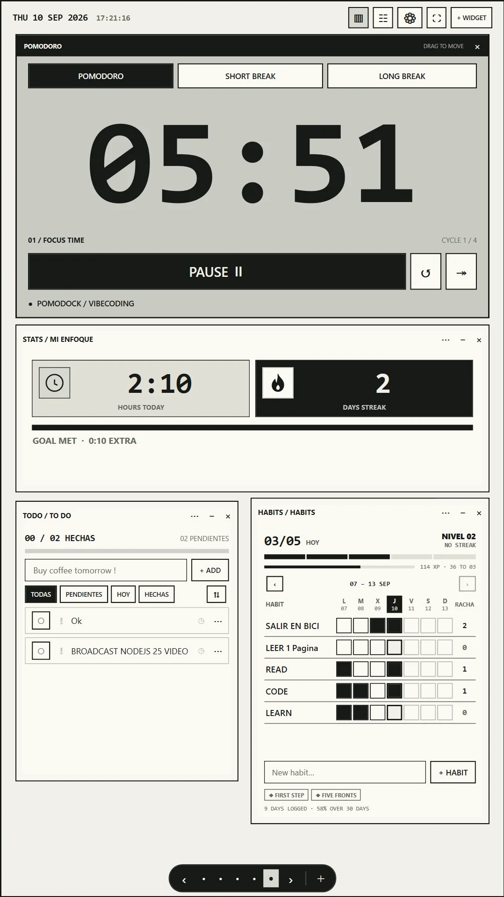
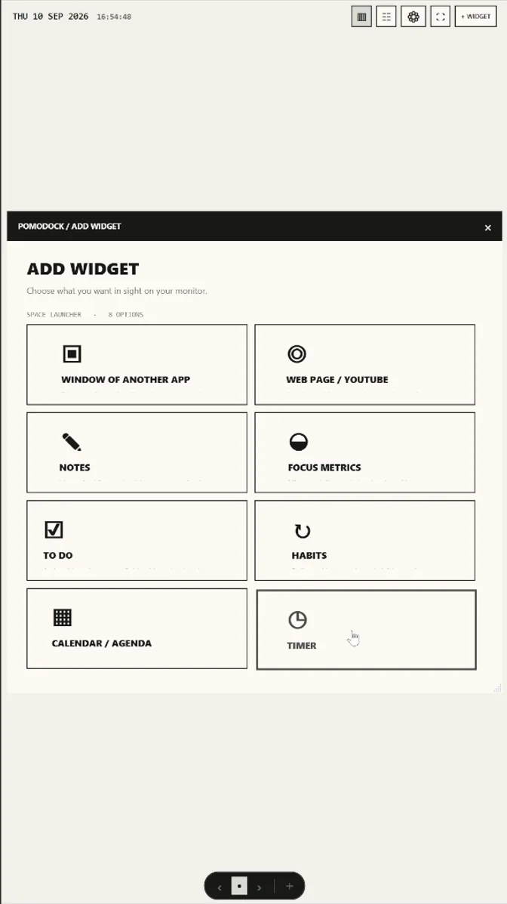
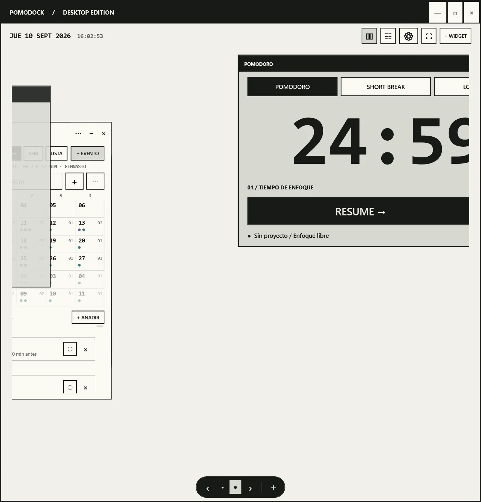
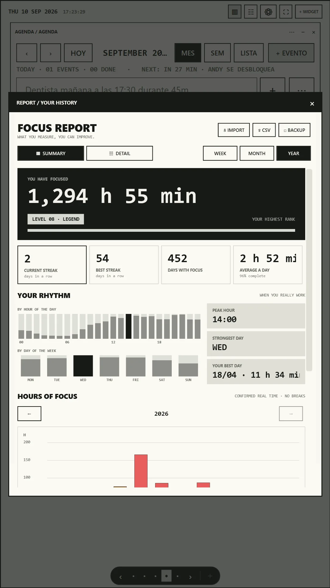

Editor, document, course—the thing that needs your attention.
WINDOWS · OPEN SOURCE · v0.1.0
Your second monitor,
turned into a focus workspace.
Pomodoro, tasks, habits, notes, calendar and stats—plus your real apps and websites as widgets. Built for the vertical screen beside your work.
- FREE + MIT
- NO ACCOUNT
- LOCAL-FIRST

01 / WHY
THE SCREEN BESIDE THE SCREEN
Your second monitor,
finally useful.
Your main monitor is for the work.
Your vertical monitor can hold everything around it.
Timer, context, routine and tools—always in sight.
02 / THE KILLER FEATURE
NATIVE WINDOWS · HTTPS PANELS
Any window can
become a widget.
Pick an open Windows app. Place the real, interactive window inside PomoDock. Move it, resize it, overlap it, or release it back to the desktop.
Your apps. Your workspace. One screen.
Window compatibility depends on each app's permission and DPI mode.

04 / IN PRACTICE
A PERMANENT DASHBOARD BESIDE THE WORK
One monitor works.
The other keeps you moving.
MAIN IDE
SECOND Pomodoro · tasks · browser · notes
MAIN Course or book
SECOND Timer · notes · habits · calendar
MAIN The project
SECOND Timer · today's tasks · focus statistics

05 / YOUR HISTORY
IMPORT POMOFOCUS HISTORY · CSV + TSV
Move from Pomofocus
without starting over.
Export your Pomofocus report and import the CSV or TSV file directly into PomoDock. The built-in Pomofocus importer turns past focus sessions into native reports, projects, tasks, streaks and rank.
- Sessions feed reports, projects, tasks, streaks and rank.
- Re-imports deduplicate stable records.
- A database safety copy is created before every import.

06 / OWNERSHIP
NO ACCOUNT · NO POMODOCK SERVER
Free. Open source.
Your data.
Read the code. Build it yourself. Change it.
Focus history and state live in SQLite on your machine.
Export CSV. Back up JSON. Keep ownership of your workspace.
DATA_PATH
Read the source ↗
%LOCALAPPDATA%\PomoDock● LOCAL07 / WHY POMODOCK
PUT PRODUCTIVITY WHERE IT BELONGS
Stop making your focus tools
compete with your focus.
TRADITIONAL PRODUCTIVITY APP
- Lives on your main screen
- Competes with the work
- Usually solves one function
POMODOCK
- Designed for the second screen
- Multiple persistent widgets
- Native tools + real apps
- Open source + local-first
08 / QUICK ANSWERS
BEFORE YOU DOCK
The useful details,
without the fine print.
Can I import my Pomofocus history?
Yes. Export the report from Pomofocus, then import its CSV or TSV file. PomoDock maps those sessions into its native history and reports.
What can I put on a vertical second monitor?
Native widgets such as the Pomodoro timer, tasks, habits, notes, calendar and focus stats, plus open Windows apps and HTTPS web panels.
Does PomoDock need an account?
No. PomoDock stores its workspace and focus data locally in SQLite and supports CSV export and JSON backup.
Is PomoDock free and open source?
Yes. The source is public under the MIT License, and the Windows installer is free to download.
BUILT IN THE OPEN
PomoDock gets better
where everyone can see it.
There is no donation program today. A GitHub star, a useful bug report or a focused contribution directly helps the project.
YOUR UNUSED SCREEN IS READY
Make your second
monitor count.
Built for people who refuse to let their second monitor go to waste.